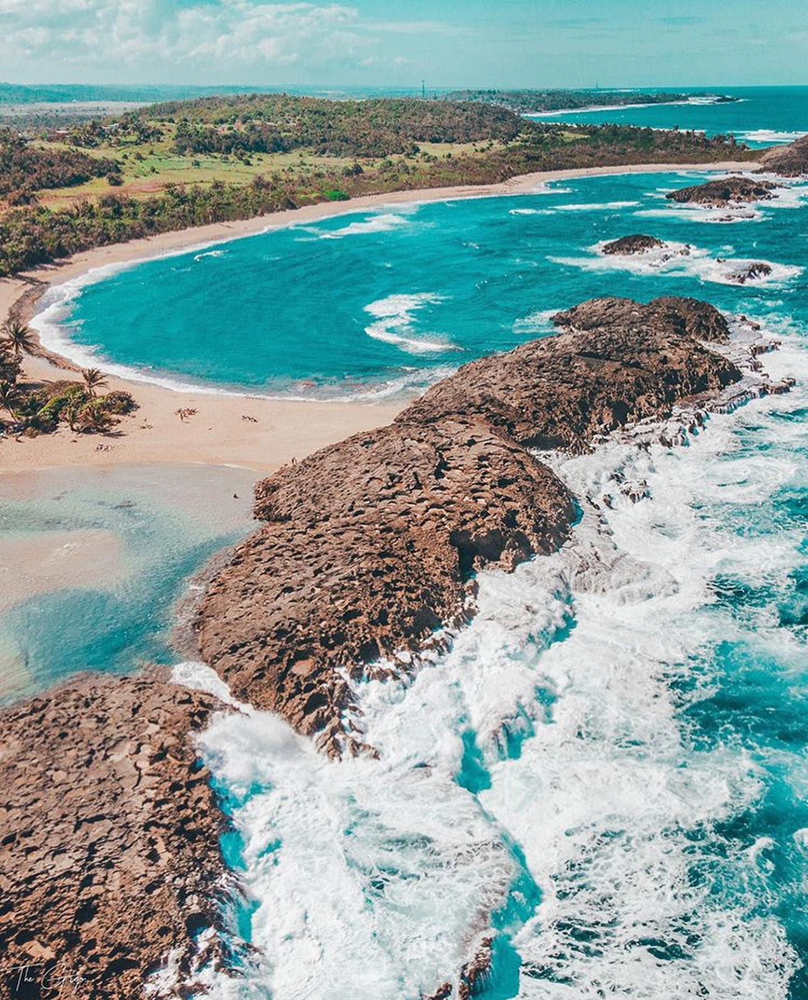
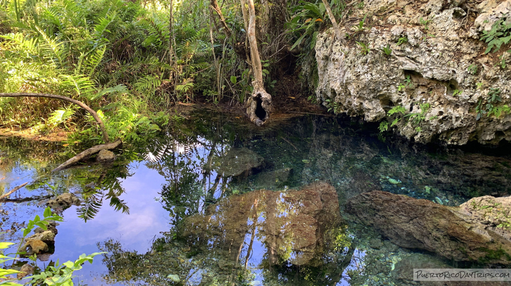
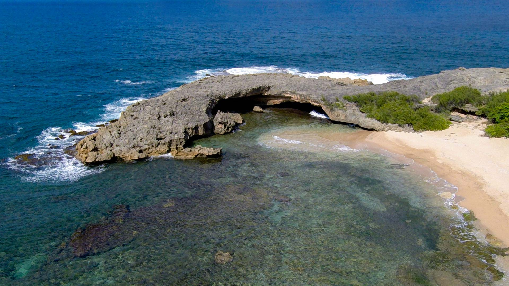

Hacienda La Esperanza Para la Naturaleza

Atrévete a conocer el área natural protegida de mayor extensión en la costa noroeste de Puerto Rico: ¡la Reserva Natural Hacienda La Esperanza en Manatí!Desde allí apreciarás los picos de la Cordillera Central, mogotes, amplios pastizales, varios tipos de humedales, playas y la desembocadura del Río Grande de Manatí.
Pueden visitar la Hacienda La Esperanza Para la Naturaleza en:
- Dirección: 616 Cll La Esperanza, Manatí, 00674
Playa Tómbolo
Hermoso tramo aislado de playa. Muchas áreas para instalar manta de playa y relajarse. Algunas zonas sombreadas bajo los árboles.
Pueden visitar la Playa Tómbolo en:
Manatí Spring
El Manantial de Guayaney está ubicado justo al lado del barrio Guayaney, en el lado sur de la Laguna Tortuguero, en Manatí. Ubicada cerca de la costa norte de Puerto Rico, está en territorio kárstico… hermosas rocas calizas que forman interesantes formaciones. Este pequeño manantial sale de la tierra a través de esta piedra caliza.
Pueden visitar el Manatí Spring en:
- Dirección: FH32+9P6, Manatí 00693
Las Golondrinas Beach
La playa Cueva de las Golondrinas se encuentra cerca de la más famosa playa Poza de las Mujeres en el pueblo de Manatí. Después de una breve caminata por terrenos pertenecientes a la Reserva Natural Hacienda La Esperanza, encontrará esta cala de playa de ensueño.
Pueden visitar Las Golondrinas Beach en:
- Dirección: FFHR+5C6 cueva las golondrinas, Manatí 00617